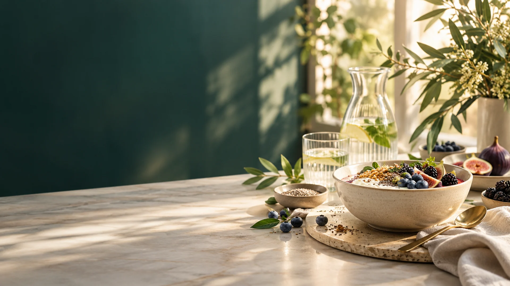
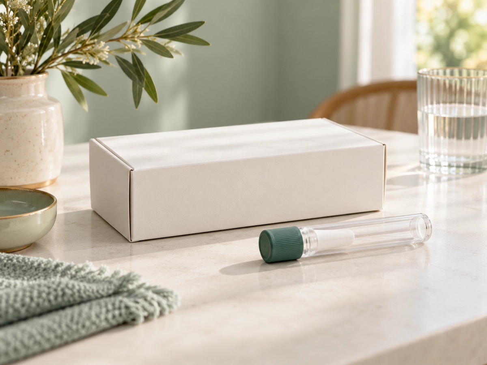

01美诺微 MINOVA
把肠道健康，放回长期生活里
我们从肠菌出发，做易懂的科普、可追踪的评估和更有边界的健康服务。
02肠菌科普
为什么肠菌很重要
消化、免疫、情绪、代谢，都与日常状态相互关联。
◌
消化
参与食物分解与营养利用。
✦
免疫
与身体的防御系统保持沟通。
≈
情绪
肠脑之间持续交换信号。
○
代谢
参与能量与身体节律的调节。
03三步守护肠道
先了解，再选择适合自己的路径
每一步都需要结合个人情况；肠菌移植需在正规医疗机构评估。

01
检测
先看懂肠道菌群现状，检测用于健康评估。
¥2199具体项目以咨询为准02
益生菌调理
结合饮食、作息与产品说明，做日常养护参考。
03
肠菌移植
科学重建肠道微生态，需在正规医疗机构评估。
04产品
先把每一项服务做扎实
产品陆续上线，欢迎先咨询具体情况。
肠菌检测套装
从样本到报告，了解你的肠道菌群。
即将上线，欢迎咨询益生菌
日常养护参考，具体以产品说明为准。
即将上线，欢迎咨询肠菌移植服务
正规医疗机构评估后的专业路径。
即将上线，欢迎咨询42天陪跑工具
14 天记用药，28 天看复测。即将上线，不改方案。
06城市合伙人招募
诚邀城市合伙人，共建肠道健康品牌
一起把专业、清晰、有边界的肠道健康服务带到更多城市。
- 品牌授权统一的品牌表达与服务边界
- 专业培训从肠菌科普到用户沟通的系统支持
- 检测与供应链支持协同产品与服务交付
- 营销物料持续更新的内容与传播素材